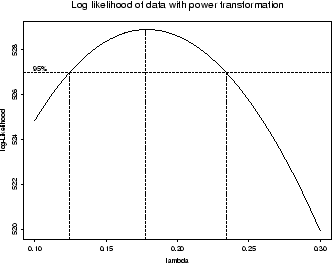
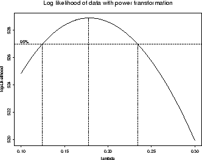

14 Anova
library(tidyverse)Un solo factor
experimento DCA: dataset PlantGrowth
?PlantGrowth
pg <- PlantGrowth # simplificamos el nombre del dataset- Exploración
str(pg) # tipo de variablessummary(pg) # exploración numéricaExploración numérica
pg %>%
group_by(group) %>%
summarise(
n= sum(!is.na(weight)),
mean = mean(weight),
sd = sd(weight),
se = sd(weight)/sqrt(n))Exploración gŕafica
pg %>%
ggplot(aes(x=group, y=weight)) +
geom_boxplot(width=0.2)+
geom_jitter(alpha=0.2, width=0.1)Ajuste del modelo lineal
\[y_{ij} = \mu + \alpha_i + e_{ij}; \:\:i = 1,..., k; \:j = 1,..., n\] \[N \sim (\sigma^2, 0)\]
mod1 <- lm(weight ~ group, data = pg) - Diagnósticos
¿Las varianzas (entre niveles del factor) son homogéneas?
# homocedasticidad
plot(mod1, which = 1)
car::leveneTest(mod1)¿Los residuos se distribuyen normales?
plot(mod1, which = 2)
shapiro.test(rstandard(mod1))anova(mod1)# caso balanceado
summary(mod1)
# car::Anova(mod1)# caso desbalanceadoTest de comparaciones múltiples (de medias estimadas de los tratamientos)
Paquete emmeans
pacman::p_load(
emmeans, # medias estimadas por el modelo
multcomp # comparar las medias entre si - tukey
)Medias e intervalos de confianza estimadas por el modelo
em <- emmeans(mod1, ~ group, type="response")
emComparaciones múltiples
res <- cld(em,
Letters = letters,
reverse = FALSE,
alpha = .05)
resplot(res)
res_tbl <- res %>% as_tibble()Graficar los resultados obtenidos del anova
- Opción A)
p1 <- res_tbl %>%
mutate(group = fct_relevel(group, "ctrl", "trt1")) %>%
ggplot() +
aes(x=group, y=emmean)+
geom_pointrange(aes(ymin = lower.CL, ymax = upper.CL))+
geom_jitter(data = pg %>% rename("emmean" = weight),
aes(x = group, y = emmean),
width = .1, alpha=0.2) +
geom_hline(
yintercept = filter(res_tbl, group=="ctrl") %>% pull(emmean),
linetype = 2, col ="gray50")+
labs(x = "Tratamiento", y = "Peso (g)")+
scale_y_continuous(breaks=scales::breaks_pretty(6))+
geom_text(vjust=-1, angle=90,
aes(label = str_squish(.group)))+
theme_bw()
p1- Opción B)
p2 <- res_tbl %>%
mutate(group = fct_relevel(group, "ctrl", "trt1")) %>%
ggplot() +
aes(x=group, y=emmean)+
geom_col(width=0.4)+
geom_errorbar(aes(ymin = lower.CL, ymax = upper.CL),
width=0.1)+
geom_hline(
yintercept = filter(res_tbl, group=="ctrl") %>% pull(emmean),
linetype = 2, col ="gray50")+
labs(x = "Tratamiento", y = "Peso (g)")+
scale_y_continuous(breaks=scales::breaks_pretty(6),
limits = c(0,7))+
geom_text(vjust=-2, aes(label = str_squish(.group)))+
theme_bw()
p2pacman::p_load(patchwork)
p1 + p2 +
plot_annotation(title = 'Alternativas de presentación de resultados',
tag_levels = 'A',
subtitle = "A) geom_pointrange() + geom_jitter()\nB) geom_col() + geom_errorbar()") Como graficaríamos con el mismo dataset - sin cálculos previos
pg %>%
ggplot()+
aes(x=group, y = weight) +
stat_summary(fun=mean, geom="bar", col="black", fill= "lightgrey", width=.5) +
stat_summary(fun.data = mean_se, geom = "errorbar", width=.1)+
labs(x = "Tratamiento", y = "Peso (g)")+
scale_y_continuous(breaks=scales::breaks_pretty(6),
limits = c(0,7))+
theme_bw()Comparación de medias de los trat vs testigo (Dunnet)
contrast(em, "trt.vs.ctrl1")Comparación de medias por LSD
library(agricolae)
res_lsd <- LSD.test(y = mod1,
trt = "group",
group = T,
console = T)
res_lsd
bar.group(x = res_lsd$groups,
ylim=c(0, 7),
# main="Prueba de comparación de medias por medio del método LSD",
# xlab="Tipo de Mezcla",
# ylab="Rendimiento del proceso",
col="steelblue")save(list=ls(), file="anova_report.Rda")Dos factores
library(tidyverse)
?ToothGrowth
tg <- ToothGrowth- Exploración
str(tg) # tipo de variablestg1 <- tg %>% mutate_at(vars(dose), as.factor) summary(tg1) # exploración numérica# exploracion numerica por tratamiento
tg1 %>%
group_by(supp, dose) %>%
summarise(
count = sum(!is.na(len)),
mean = mean(len, na.rm = TRUE),
sd = sd(len, na.rm = TRUE)
)pacman::p_load(plotly)# Exploración gŕafica
tg %>%
ggplot() +
aes(x = dose, y = len, col = supp)+
# geom_line() +
geom_line(stat = "summary", fun=mean) +
geom_point()
tg1 %>%
ggplot(aes(x = dose, y = len, col = supp)) +
geom_boxplot() +
facet_wrap("supp")
tg1 %>%
ggplot(aes(x = supp, y = len, col = supp)) +
geom_boxplot() +
facet_wrap("dose")
p2 <- tg1 %>%
ggplot(aes(x = dose, y = len, col = supp)) +
geom_boxplot() +
geom_point(position=position_jitterdodge())+
labs(title = "ToothGrowth Data",
y = "Length of Odontoblast Cells",
x = "Dosage of Vitamin C",
fill = "Vitamin C Type")
ggplotly(p2)Ajustar modelo
mod2 <- lm(len ~ supp * dose, data=tg1)
# equivale a supp + dose + supp:dose- Diagnósticos
¿Las varianzas (entre niveles del factor) son homogéneas?
# homocedasticidad
plot(mod2, which = 1)
car::leveneTest(mod2)
# bartlett.test(len~dose, data=tg1)$p.value¿Los residuos se distribuyen normales?
plot(mod2, which = 2)
shapiro.test(rstandard(mod2))anova(mod2)- comparaciones múltiples (un factor dentro del otro)
pacman::p_load(emmeans, multcomp, multcompView)
# emmip(mod2, supp~ dose)posthoc <- emmeans(mod2, pairwise ~ supp|dose, adjust="tukey")
cld(posthoc$emmeans, alpha=.05, Letters=letters)posthoc1 <- emmeans(mod2, pairwise ~ dose|supp, adjust="tukey")
cld(posthoc1$emmeans, alpha=.05, Letters=letters)posthoc2<-emmeans(mod2, pairwise~supp*dose, adjust="tukey")
cld(posthoc2$emmeans, alpha=.05, Letters=letters)emmip(mod2, ~ supp | dose)library(ggeffects)
ggpredict(mod2, terms = c("dose", "supp")) %>%
plot()
library(lme4)
# pacman::p_load(lmerTest)
fm1 <- lmer(Reaction ~ Days + (Days | Subject), sleepstudy)
anova(fm1)
car::Anova(fm1)Transformación potencia óptima de boxcox
Esta transformación sólo tiene un parámetro: lambda, graficado en el eje x. Si el valor de lambda es igual a cero, se lleva a cabo la transformación con el logaritmo natural, y si dicho valor es distinto a cero la transformación es potencial.

 

Si el parámetro lambda es igual a uno, no hace falta transformar la variable respuesta. Si el intervalo (líneas punteadas verticales) no contiene a 0 ni a 1, hay que transformar la variable elevando a la potencia del valor de lamba incluido en el intervalo.
La utilización de la transformación Box-Cox requiere que todos los valores de la serie de entrada sean positivos y distintos a cero. Por ello es adicionada una constante a la variable original (0.5, por ej.).
En el caso de la derecha, el modelo resultaría:
lm((y+0.5)^0.2 ~ trt + bk, ...)Lexturas recomendadas
Analysis and Interpretation of Interactions in Agricultural Research
A brief introduction to mixed effects modelling and multi-model inference in ecology
:::